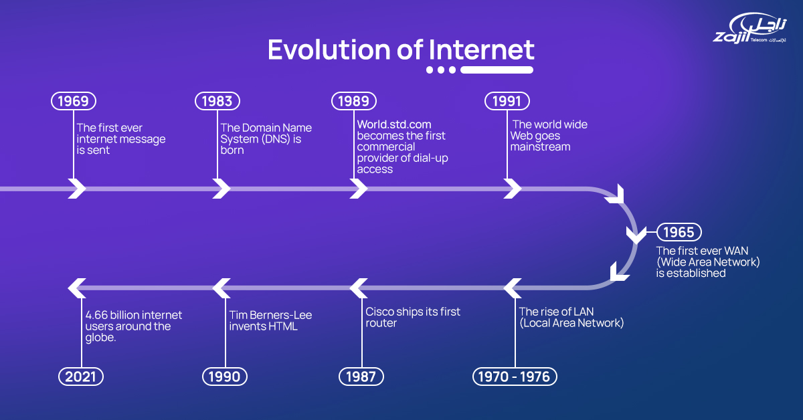

Home
History of Computer Networks
Computer networks have evolved from simple point-to-point connections to complex global systems enabling seamless communication and data sharing.
Key Milestones in Computer Network History

1960s: The concept of packet switching is introduced, laying the foundation for modern networking.
1969: ARPANET, the precursor to the internet, is established, connecting four universities in the US.
1983: The TCP/IP protocol becomes the standard for ARPANET, enabling interoperability between networks.
1990: Tim Berners-Lee invents the World Wide Web, revolutionizing how information is shared online.
2000s: The rise of wireless networks and mobile connectivity transforms global communication.
Present: Advancements in 5G, IoT, and cloud computing continue to shape the future of networking.